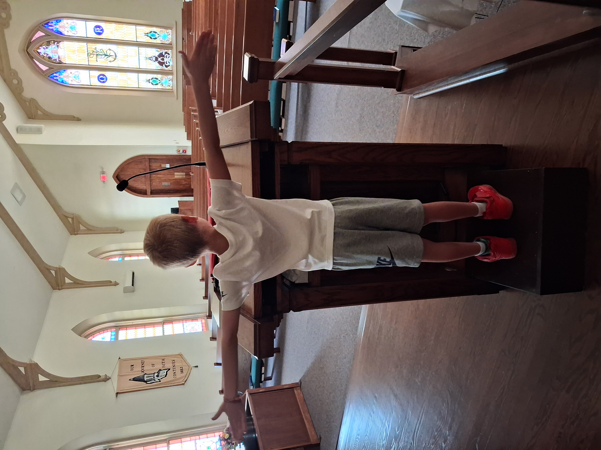
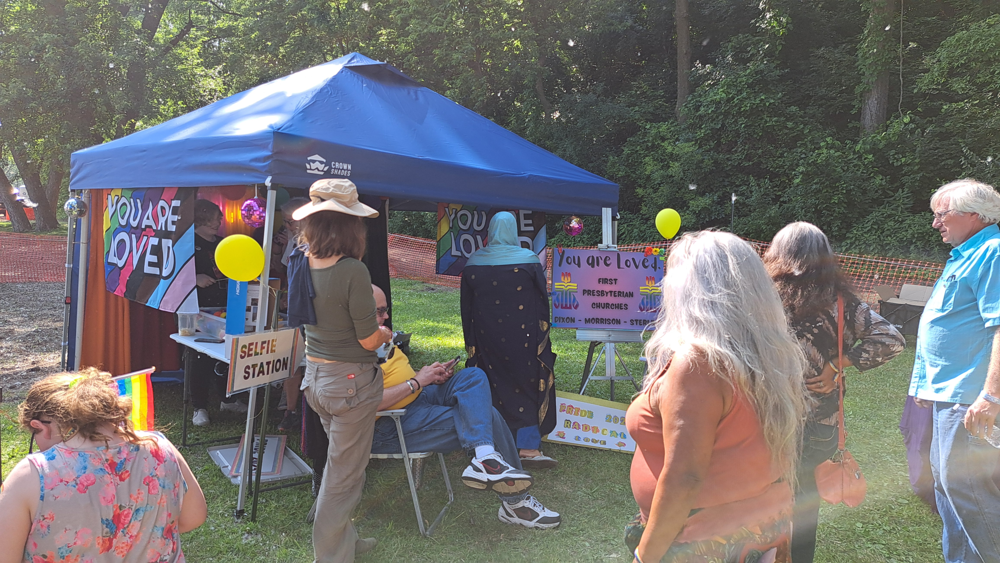
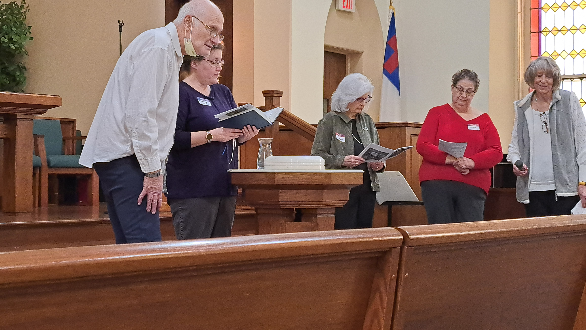

A brief History of Us
Get to know the rich history of our beloved church!

A Brief View of Our History
Soon after the opening of the Collegiate Institute, the First Presbyterian Church Building was dedicated on Feb. 17, 1856. This building stood immediately adjoining the present church structure and was a small brick building, 28 by 42 feet. A short time afterward, a group of New England Congregationalists enlarged the church fellowship and it became necessary to seek larger quarters.
On Jan. 1, 1858, the Presbyterians moved to a building located in North Dixon which had been formerly occupied by the Unitarians. This was done so that the Congregationalists could have a building to themselves. During the Civil War period these two congregations differed on issues of slavery and states' rights and went their separate ways.
Dr. E. C. Sickels, second pastor of the church was installed on June 1, 1863 and served some 32 years, the longest pastorate record for the church. It was during his tenure that the present church structure was built at a reported cost of $5,000 and constructed of dressed Trenton Limestone. The church was dedicated on Oct. 28, 1866.
During 1897, an addition was added at a cost of $3,500. The church was once again enlarged by the addition of an educational building in 1952. A feature of the building is a 130 foot bell tower with a bell weighing over 2,000 pounds, converted to an automated system in 1969.
The First Presbyterian Church has been at its present location at 110 East Third Street since 1864 — the oldest church in Dixon still using its original facility.

Our Denomination

We are a Presbyterian Church U.S.A. congregation. The PCUSA is an open & affirming denomination, recognizing that God created all humans equally. We ordain women, men, non-binary individuals, and members of the LGTBQIA+ community as God calls them to leadership. We are a member of Blackhawk Presbytery, and the Synod of Lincoln Trails.
- the proclamation of the Gospel for the salvation of humankind
- the shelter, nurture, and spiritual fellowship of the children of God
- the maintenance of divine worship
- the preservation of the truth
- the promotion of social righteousness
- and the exhibition of the Kingdom of Heaven to the world.
— cited from the Presbyterian Church U.S.A. Constitution, Part II, G1.0200.
We extend an invitation for you to join us in our worship and work.
A Few More Details
As a local congregation we are led by a Ruling Board called the Session, composed of seven ordained elders and moderated by the pastor. The Session has five committees: Worship, Christian Education, Mission/Witness, InnerMission, and Stewardship.
The Worship Committee oversees everything pertaining to worship from music, Communion, nursery care, to candles, flowers, banners, and the sound system. The Christian Education Committee is responsible for the spiritual education of our community. The Mission/Witness Committee is responsible for mission outreach, local, national, and international. The InnerMission Committee ministers to the needs of the congregation. The Property & Finance Committee is responsible for all matters that pertain to property, personnel, and finance.

Site by Augustana Web Guild